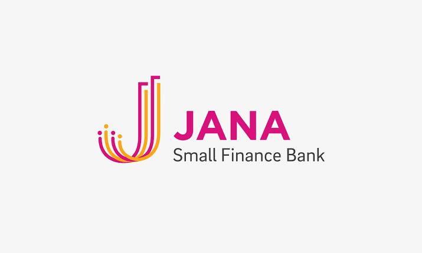
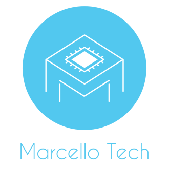
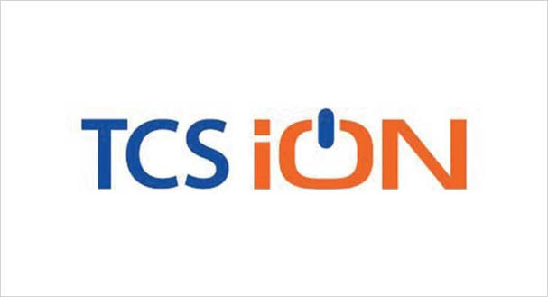

Experience
Technical & Cloud Support Engineer
Precision Techserve Pvt. Ltd.
Supporting Jana Small Finance Bank


Web Development Intern
Marcello Tech, Trichy, Tamil Nadu
Helped build and deploy a full-stack web application using PHP, MySQL, and JavaScript and resolved application-related issues.

TCS iON Online Examination Project
Supported server-based examination activities and coordinated examinations conducted across multiple locations.